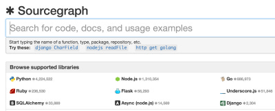
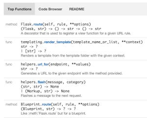

(The above picture was taken from: http://sourcegraph.com/github.com/mitsuhiko/flask) I recently joined a newly founded company called Sourcegraph.com. We build an intelligent code search engine using some of the most powerful programming language technologies. The difference between Sourcegraph and other code search sites is: Sourcegraph truly understands code and produces accurate results. Sourcegraph lets you semantically search and browse opensource code on the web in a similar fashion as you do locally with IDEs. It also finds users of your code worldwide, and show exactly how they use your code. For example the following is what Sourcegraph shows you about Flask framework's Flask.route method.


PySonar2 integration
Two weeks since joining, I have successfully integrated PySonar2's type inference and indexing features with Sourcegraph.com, so that it can now show inferred types for Python functions. This is an advanced feature currently not available in any Python IDE. For example, the following is the "Top Functions" page for the Flask framework, showing the PySonar2 inferred types. Notice that the parameters are not type-annotated. PySonar2 infers the types by an advanced interprocedural analysis.

How to use sourcegraph.com to browse your GitHub repo
You can browse your GitHub by prepending "http://sourcegraph.com/" to your GitHub repo's address. For example, if your repo address is github.com/myname/myrepo, then you put this address into the browser:
http://sourcegraph.com/github.com/myname/myrepo
Currently this trick works only for GitHub addresses. If Sourcegraph hasn't yet processed the repo, it will queue it and start analyzing as soon as possible. Usually this finishes within a few minutes up to half an hour, depending on how large the repository is and how busy the servers are. Sourcegraph currently supports Go, JavaScript, Python and Ruby. More languages are under development. All our features are still in beta and may contain quite some bugs and many areas of improvements. You are very welcome to send bug reports and feature requests to us.